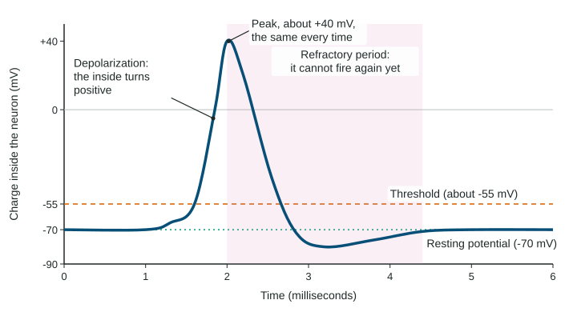

Every thought, feeling and movement you have starts the same way: one cell passes a message to the next. Those cells are neurons, and the way they fire explains how caffeine wakes you up, how a pain medicine works, and why a person with a damaged nerve loses feeling. On the exam you will see a situation (a drug, a disease, a reflex) and need to name what is happening at the neuron.
The parts of a neuron

Follow a message through the cell from left to right in the figure.
- Dendrites are the branches that receive messages from other neurons.
- The cell body (soma) holds the nucleus and adds up all the incoming messages.
- The axon is the long fiber that carries the neuron's own signal away from the cell body.
- The myelin sheath wraps many axons in fatty segments. It insulates the axon so the signal jumps from gap to gap and travels much faster.
- The axon terminals at the end of the axon release chemical messengers to the next cell.
Neurons are not alone. Glial cells, about as numerous as neurons, do the support work: they hold neurons in place, feed them, clean up waste and make myelin.
Neurons come in three working types. Sensory neurons carry information in from the body. Motor neurons carry commands out to muscles and glands. Interneurons, inside the brain and spinal cord, connect the two. A reflex arc uses all three: touch a hot pan and a sensory neuron sends the message to the spinal cord, an interneuron passes it to a motor neuron, and your hand pulls back before the message even reaches your brain. That is why you move first and feel the pain a split second later.
How a neuron fires

A neuron at rest is like a charged battery. Its inside is negative compared with the outside, about -70 millivolts (mV). This is the resting potential.
When messages from other neurons arrive, some push the charge up. If the charge rises enough to reach the threshold, about -55 mV, the neuron fires. Positive ions rush in (depolarization), the inside briefly turns positive, about +40 mV, and the change sweeps down the axon. That traveling spike is the action potential (the graph).
Three rules come up again and again:
- All-or-none. A neuron either fires a full action potential or does not fire at all. There is no half spike. A stronger stimulus does not make a bigger spike; it makes the neuron fire more often, and more neurons fire. A hot stove and a warm mug produce the same size spikes, just more of them for the stove.
- The refractory period. Right after firing, the neuron needs a moment to reset before it can fire again. This keeps the signal moving one way, from cell body to terminals.
- Myelin sets the speed. A thick, myelinated axon can carry a signal at over 100 meters per second; a thin one without myelin, about 1 meter per second.
Worked example: how long does the signal take? A message travels 1.2 meters from a toe to the spinal cord along an axon that conducts at 80 meters per second. How many milliseconds does it take?
Time is distance divided by speed: seconds. There are 1,000 milliseconds in a second, so milliseconds.
Two slips to avoid: multiplying distance by speed (that gives 96, which is not a time), and stopping at 0.015 when the question asks for milliseconds.
The synapse: chemical messages
Neurons do not touch. Between the axon terminal of one and the dendrite of the next is a tiny gap; the whole junction is the synapse. When the action potential reaches the terminal, small sacs called vesicles release neurotransmitters into the gap. These molecules bind to receptor sites on the next neuron, like keys fitting locks.
An excitatory neurotransmitter pushes the receiving neuron toward threshold. An inhibitory one pushes it away. The receiving neuron adds up all its excitatory and inhibitory inputs and fires only if the total reaches threshold. Afterward, the sending neuron pulls leftover neurotransmitter back in. That is reuptake, and it ends the message.
| Neurotransmitter | Main jobs | An example you might see |
|---|---|---|
| Dopamine | movement, motivation, reward | Loss of dopamine neurons causes the tremor of Parkinson's disease |
| Serotonin | mood, sleep, appetite | Medicines for low mood often raise it |
| Norepinephrine | alertness, arousal | Sharp focus when a test starts |
| Glutamate | the main excitatory messenger | Too much can overexcite neurons |
| GABA | the main inhibitory messenger | Alcohol boosts it, so reactions slow |
| Endorphins | natural pain relief | Less pain partway through a long run |
| Substance P | carries pain signals | The sting of a cut finger |
| Acetylcholine | muscle contraction, learning | Every voluntary movement |
Hormones: the slower system
The endocrine system sends messages a different way. Glands release hormones into the blood, which carries them all over the body. Hormones are slower than neurotransmitters but last longer, which is why your heart keeps pounding for minutes after a scare. The pituitary gland, at the base of the brain, directs many other glands.
- Adrenaline (epinephrine): readies the body for an emergency.
- Leptin: from fat cells, signals "enough energy stored", so appetite falls.
- Ghrelin: from an empty stomach, signals hunger.
- Melatonin: rises in the dark and helps time sleep.
- Oxytocin: released in childbirth, nursing and close contact; linked to bonding. An early study reported that an oxytocin nasal spray increased trust, but larger later studies have not reliably found that effect, so treat "the trust hormone" as an overstatement.
Drugs at the synapse
Psychoactive drugs change mood, perception or behavior, and almost all of them do it at the synapse.
| What it does | Effect on the message | Example | |
|---|---|---|---|
| Agonist | mimics the neurotransmitter or boosts its release | stronger | Opioids act like endorphins |
| Antagonist | sits in the receptor and blocks it | weaker | Some snake venoms block acetylcholine and paralyze muscles |
| Reuptake inhibitor | blocks reuptake, so the neurotransmitter stays in the gap | longer and stronger | Cocaine blocks dopamine reuptake; many mood medicines block serotonin reuptake |
Drugs are also grouped by their overall effect. Stimulants (caffeine, nicotine, cocaine, amphetamines) speed the nervous system up. Depressants (alcohol) slow it down. Hallucinogens (LSD, psilocybin) distort perception. Opioids (morphine, heroin, fentanyl) mimic endorphins: they relieve pain but slow breathing, which makes an overdose deadly.
With repeated use the brain adapts. Tolerance means a person needs more of the drug for the same effect. Withdrawal is the unpleasant reaction, often the opposite of the drug's effect, when the drug stops. A daily coffee drinker who skips a morning cup and gets a headache and fog is in mild caffeine withdrawal.
When signaling fails
Two diseases show what each part does. In multiple sclerosis the immune system destroys myelin in the brain and spinal cord, so signals slow or fail: numbness, weakness and blurred vision follow. In myasthenia gravis the immune system attacks the acetylcholine receptors where nerves meet muscles, so muscles tire quickly with use; drooping eyelids are a common first sign. One is a problem of the axon's insulation, the other of the synapse.